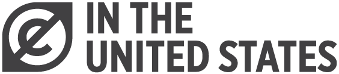
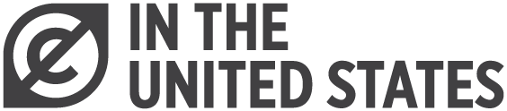

Open Access Policy
The PHAROS digital research open access platform provides you with a single point of access to more than 2.6 million images and records of artworks and architecture from around the world and their associated scholarly documentation (“PHAROS Platform”). The PHAROS Association (“PHAROS”) publishes these materials as openly as possible, but many items are affected by copyright, contractual rights, or other considerations that limit their reuse beyond this Platform.
This policy describes:
- our approach to open access;
- how Intellectual Property Rights and other Rights affect PHAROS Content;
- how to tell what Content you can use, and under what terms;
- who to contact for licensing requests; and
- who to contact if you believe you hold Rights in the content.
Please ensure you also read our Terms of Use and Privacy Notice.
PHAROS, PHAROS Content and open access
PHAROS compiles and makes available content posted on the Platform, which includes Digital Surrogates of archival documents and photographs, as well as text, information, and data on objects, Metadata, design, codes, and software (“Content”).
To support open access goals, all Content can be freely accessed, viewed, and read on the PHAROS Platform. By creating an account, Registered Users can also download Content and contribute to the Platform.
PHAROS Members support the premise that Public Domain materials remain in the Public Domain following digitization. Despite this, other Rights may restrict your use of the Content. Many materials are protected by copyright. In most cases, PHAROS Members do not own the copyrights associated with the materials in their collections. Copyright might belong to: artists, their estates, or other Third-Party Rightsholders who own Rights in the underlying work; curators or researchers who have made inscriptions on the archival mount; or photographers or other Third Party Rightsholders who produced, commissioned, or own the archival photograph.
PHAROS balances the educational and scholarly purposes it serves with the interests of these Rightsholders by publishing Content through an open access Platform alongside any rights statements that detail whether and how the item can be reused.
What is copyright?
Copyright is a legal right that protects a person’s interest in the creative materials they produce. Copyright typically lasts for as long as the creator is alive, plus another 70 years after their death. Once copyright expires, the materials become part of the Public Domain and are available for anyone to reuse for any purpose and without permission.
Because copyright is tied to the creator’s lifetime, certain information is important to know, such as the creator’s identity, when they died, or whether they assigned the rights to another person. Many items in PHAROS Members’ collections lack information on the copyright or rightsholder. By law, we have to assume this Content remains protected by copyright.
Copyright can apply to a range of Content like:
- the artwork depicted in an archival photograph;
- the archival photograph of an artwork, an exhibition or architecture;
- the arrangement of images and text on an archival mount;
- written comments, opinions, scholarly documentation or annotations; or
- text in extracts or clippings taken from exhibition catalogs or newspapers.
PHAROS Members make every attempt to publish the Content on this Platform as openly as possible. This means, as a matter of policy, PHAROS Members do not claim new Rights in the digital materials contributed to the Platform, like Metadata and Digital Surrogates. All materials are published according to any Rights status of the underlying item or materials depicted, to the extent that we know that status.
How Intellectual Property Rights and other Rights affect your use
In addition to copyright, Content on the PHAROS Platform may be protected by other Rights, like database rights, contractual agreements, data, or privacy rights.
Some examples include:
- database rights in the Platform and its Contents;
- collections of images restricted by contractual agreements with photography suppliers or the owners of the artworks or the photographs;
- photographs of artworks taken in a private residences; or
- personal information related to donors, owners, or users.
Some materials are in the Public Domain and are marked as such. Materials identified as Public Domain can be used free of charge and without seeking permission from PHAROS or the contributing PHAROS Member. When using Public Domain materials, users are encouraged to give credit to the author and providing institution (the PHAROS Member) and to PHAROS. More guidance on how to do this is provided below, and in Europeana’s Public Domain Usage Guidelines.
Digital Surrogates
Digital Surrogates are representations of a physical object, such as a photograph of an artwork or an archival document, stored in digital form. No new Rights are claimed by PHAROS Members in the Digital Surrogates published to the Platform. Digital Surrogates are published as openly as possible. Any restrictions on Use and Reuse are the result of Rights held by third parties. Third-Party Rightsholders are parties other than PHAROS and PHAROS Members who own or have contributed Content.
Metadata and User Contributions
PHAROS Members publish Metadata using the Creative Commons 1.0 Universal Public Domain Dedication (CC0 1.0). User Contributions are also published using the CC0 1.0 Public Domain Dedication. Metadata and User Contributions can be used for any purpose, including commercial use, without restrictions or obligations.
Metadata and User Contributions may include information on provenance, attribution, conservation, exhibitions, publications, and other valuable information that can support new scholarship and teaching for a wide range of topics. For these reasons, we ask that you credit PHAROS and/or the individual PHAROS Member and/or the Registered User as the provider of the Metadata and link to the source so that others may locate the Metadata, data or artwork, whenever it is possible to do so. More guidance on how to use public domain materials and give credit can be found in the Public Domain Usage Guidelines.
All metadata is published using the CC0 1.0 Public Domain Dedication and is available for download through our SPARQL endpoint (https://artresearch.net/sparql).
PHAROS Platform and Services
Users may access the PHAROS Platform and create an account for free. Registered Users can also download certain Content. Some of the source code is published using the GPLv3 license and is available on GitHub (https://github.com/artresearch).
How to tell what Content is available for Reuse
The PHAROS Platform allows you to filter materials by rights status to find items that you can use, share, or modify for personal, educational, or commercial uses.
Content that is openly licensed or in the Public Domain can be used without our permission. We would appreciate learning how you are using the Content, which you can share through our contact form. Knowing more about how the PHAROS Platform and Content is used helps us improve the Services and support our open access goals.
Licenses, tools, and labels
PHAROS Members use Creative Commons licenses and tools when they own Rights, have received permission from a Third-Party Rightsholder to apply the license or tool, or when no Rights exist in the Content.
PHAROS Members use RightsStatements labels when the copyright status is unclear, the works are no longer in copyright in the United States, or when other restrictions apply to the Content.
Locating the rights status
You can find the item’s rights status information in the “Image License” tab on each artwork or photograph record.
Attributing the work or information
It is good practice to attribute the source of the image, data or other information you use. Attribution is legally required if a work is in-copyright. While no attribution is required with Public Domain materials, whenever possible we ask that you please provide basic credit to PHAROS, the PHAROS Member, and/or the Registered User with the permalink so others can find the source of the image, data or other information.
More guidance on citing PHAROS Content is provided below. Learn more about how to credit authors and institutions in Europeana’s Public Domain Usage Guidelines.
The Platform has two tools to aid attribution. Our citation button uses metadata to auto generate citation information, which can be copied and pasted (see “Citation”). Please keep in mind the nature of the PHAROS Platform is to constantly change and improve over time; this means citation information may change with it. Please also be aware that information may be minimal or conflicting in metadata aggregated across multiple PHAROS Members. This is why every record also contains a permalink button (see “Permalink”). Including the permalink in your citation ensures the record can always be found along with the most up-to-date information.
Basic credit information for photographs might include the artist, title, photographer, any relevant dates, the permalink, date accessed, archive source, and license. Other content, such as User contributions and datasets, require a different citation format. Citation examples for these and other PHAROS Content are included below.
Photograph or Archival Mount
Recommended citation format: Photograph of / Archival Mount of Artist (Lifespan), Title (Year), Photographer (Year), Permalink (accessed on Date), Photo archive source, License
- Archival Mount with photograph of Franz Joseph Spiegler (1691-1756), Heiliger Sebastian (1750), Unknown photographer (1936), https://artresearch.net/resource/pharos/artwork/1cb411b27b977958623be6109835debd9f8845c7 (accessed on July 8, 2022), Bildarchiv Foto Marburg, Copyright Not Evaluated
- Photograph of Childe Hassam (1859-1935), McSorley’s Bar (1891), photographed by Brenwasser, https://artresearch.net/resource/pharos/artwork/1dd781b08ea217c61f810865cadfc530196754f8 (accessed on July 8, 2022), Frick Art Reference Library, Copyright Not Evaluated
User Contribution
Recommended citation format: User contribution by Username, on Record permalink (accessed on Date), CC0
- User contribution by HoGarthian77, on https://artresearch.net/resource/pharos/artwork/90897736da7cd54d382f637b79b05d3616091e0a (accessed on 8 July 2022), CC0
Datasets
There is no one way to acknowledge use of our datasets. We would appreciate that you credit us using the GitHub link and license: https://github.com/artresearch, CC0
How to identify Content that is openly licensed or in the Public Domain
To find Content that you can use for any purpose with attribution, use the search to filter by, or look for, the CC BY and CC BY-SA icons.


To find Content that you can use for any purpose without conditions, use the search to filter by, or look for, the CC0 and Public Domain Mark icons and the RightsStatements label No Copyright - United States.

 

Finally, Content marked with the label Copyright Undetermined indicates rights might arise in one or more jurisdictions, but we are unable to make a conclusive determination. Content marked No Known Copyright communicates that we are unaware of any existing rights. Content marked Copyright Not Evaluated communicates we are in the process of evaluating copyright. In all cases, it is your responsibility to clear copyright and ensure any reuse complies with the applicable laws in your country of residence.
Why all PHAROS Content is not openly licensed or in the Public Domain
PHAROS Content may be restricted for various reasons such as:
- the underlying item or a component part is under copyright;
- the contributing institution lacks sufficient information to conclude the item is not under copyright; or
- the item is subject to contractual restrictions from a donor, owner, artist, or photographer.
You can learn more about the layers of Rights that can arise in PHAROS Content in this diagram.
Who to contact for commercial use
For permission to use rights-restricted materials, please contact the PHAROS Member associated with the item to inquire about commercial use.
What rights you have in the content that you contribute
In line with our commitments to open access and privacy, you are free to read and view Content on the Platform without registering for a User account.
Users who register for an account can download PHAROS Content and contribute to the Platform, such as adding commentary, questions, annotations, opinions, and assertions (“User Contributions”). You must consent to the Terms of Use when registering, which states all User Contributions are made available to others under the terms of the Creative Commons CC0 1.0 Universal Public Domain Dedication (CC0 1.0). This means anyone may use your contributions for any purpose.
As a Registered User, you control what contributions you make to the Platform. You are free to use and enjoy the Platform without ever making any User Contributions.
Who to notify about copyright information or a violation
If you believe any Content or User Contributions infringe your rights, please contact PHAROS using this form and include a link to the relevant Content so we may investigate. We may withdraw the Content or User Contributions from the Platform while the matter is investigated. PHAROS will respond within 15 working days of receipt of the details via the contact form.
How PHAROS and PHAROS Members assess Rights in Digital Surrogates, Data and Metadata
In line with our commitments to open access, our rights workflow documents and other organizational materials are made available below and published CC BY. Please note these documents are not legal advice.
Glossary - Note to reviewers: the glossary is in the Data Collaboration Agreement and will be extracted as a standalone glossary for the website
Flowchart - Note to reviewers: this refers to a revised version of the flowchart on p. 33 of the Copyright Workshop Report
Image Rights Specifications - Note to reviewers: this in-progress workflow document covers rights assessments and assigning the appropriate license, public domain tool, or label based on the information at hand
Data Collaboration Agreement - Note to reviewers: publication of the DCA complies with peer data aggregators, such as Europeana and DPLA
Effective: 8 July 2022